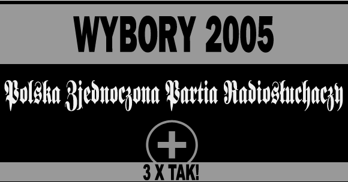
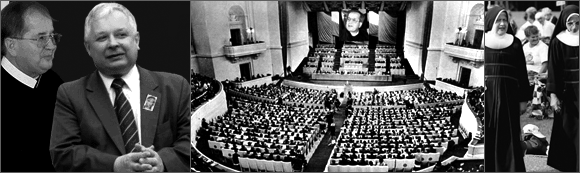
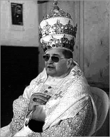
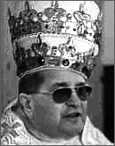
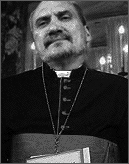
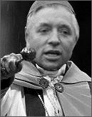
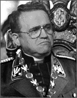
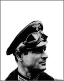
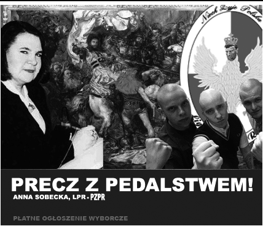

|
|
|
|  |
|
| Cimoszewicz, matacz ¿ydo-masoñsko-esbecko-komunistyczny
wycofa³ siê!
Dobrze siê sta³o, to koniec postkomuny! Nasza Partia ma teraz
wielk¹ szansê.
Nie zmarnujcie tej szansy i g³osujcie, g³osujcie na PZPR - Polsk¹
Zjednoczon¹ Partiê Radios³uchaczy !
Jest 14 wrzeœnia Anno Domini 2005. Jutro w mediach poka¿¹ nowe
wyniki badañ CBOS i jak Bóg chcia³,
znajdziemy siê znowu na liœcie. Pojutrze zajmiemy I miejsce
- 99% Elektoratu bêdzie g³osowa³o na nas!
Nadszed³ czas dzia³ania skutecznego w celu ratunku Polski,
przez wybór w³adzy narodowej, która przygotuje drêczon¹ Ojczyznê
na szczêœliwoœæ Polskiego Narodu tj. Królestwo Matki Bo¿ej Królowej
Polski, które zapewni pracê wszystkim Polakom i uzdrowi ¿ycie
wszystkich gospodarstw Polskich rolników oraz przywróci Narodowi
rozkradziony maj¹tek.
5 Wybranych Tez G³ównych PZPR
1. Trzeba piæ zio³a, bo to nie chemia. Ale jak
siê je pije na przyk³ad o pó³nocy, stoj¹c na jednej nodze, to
ju¿ wtedy zaczyna siê okultyzm i diabe³.
2. Telewizja i gry komputerowe mog¹
byæ przyczyn¹ masturbacji, która bêdzie póŸniej przeszkadza³a
w tworzeniu wiêzi rodzinnych. Badania na ca³ym œwiecie wskazuj¹,
¿e masturbacja jest g³ówn¹ przyczyn¹ rozwodów na ca³ym œwiecie.
3. Muzyka techno w takim samym,
a mo¿e nawet wiêkszym stopniu co narkotyki, uzale¿nia. Wywo³uje
bowiem w organizmie podobne reakcje chemiczne. Prowadzi te¿
do rozwi¹z³oœci seksualnej.
4. Mi³oœæ do Boga mo¿na wyra¿aæ
w rozmaity sposób. Na przyk³ad mo¿na postanowiæ sobie: dziœ
nie na¿rê siê czekolady jak œwinia.
5. Filmy rysunkowe s¹ narzêdziem
dewastacji psychiki dziecka. Ich bohaterowie s¹ g³osicielami
satanizmu... na przyk³ad ten kwacz¹cy kaczor Donald... On nie
zna litoœci. Jest okrutny i bezwzglêdny. Jeœli nawet dochodzi
do jakiegoœ celu, to po trupach. Jego prawem jest prawo zemsty.
|
 |
|  |
|
| Ekipa archeologów odnalaz³a 14.09.2005 w Toruniu
III Tablicê Przykazañ z wyrytym na niej XI Przkazaniem.
Oto treϾ XI Przykazania:
Czcij PZPR, Radio Maryja, Telewizjê Trwam, Ojców Toruñskich,
Wielebnego Ojca Tadeusza Rydzyka
i wszystkie Dobre Sprawy przez Ojca stworzone. Nie zapominaj
o wielkich, dobrowolnych op³atach
oraz innych wp³atach na œwiête cele Wielebnego Ojca. |
|
|
| Z£OTE CYTATY
OJCA DYREKTORA:
"Czy to nie jest eutanazja... To jest eksterminacja!
Przygotowaæ tak wszystko ¿eby ludzie biednieli,
¿eby sami padali. Bo przecie¿ Platforma chce
pedalstwa!"
"Mniej dzwoñcie, wiêcej p³aæcie - A jak
ju¿ dzwonicie, to mówcie krótko i na temat.
Bez tylu lamentacji! Skracajcie siê nawet po
modlitwie przez telefon: krótko, imiê i miasto,
sk¹d jesteœcie, a nie g³osiæ elaboratów. Zaoszczêdzone
na rozmowach pieni¹dze wp³acajcie na nasze konto!"
"By³em w Bia³ymstoku i widzia³em taki perfidny
plakat. Taki wielki... niby by³ przeciwko AIDS.
Pisa³o na nim: "Wszyscy to robicie, ale
róbcie to z g³ow¹". Jakie¿ to wstrêtne...
wszyscy robicie, a przecie¿ ja tego nie robiê."
"Ja ju¿ nie mogê siê na to wychowanie seksualne
patrzeæ. I popatrzcie, jak ono jest wprowadzane
w Polsce. Rêkami katolików jest wprowadzane. To
jest normalny instrukta¿. Dzieci siê instruuje,
jak robiæ samogwa³t, jak sobie robiæ dobrze...
bez Boga."
"Ostatecznym celem homoseksualizmu jest
walka z Koœcio³em i zniszczenie Koœcio³a."
"Kochani... nale¿y siaæ, siaæ, siaæ!
Trzeba siaæ, aby uros³o. Siaæ... siaæ, a jak
nie bêdziecie siaæ, to... to i tak uroœnie."
"A ta prostytucja na drogach? Jakie¿ to
wstrêtne.I popatrzcie, kto siê ko³o tych narzêdzi
diab³a zatrzymuje. Popatrzcie... góry miêsa
z hormonami – bo przecie¿ nie ludzie. Trzeba
siaæ, siaæ... tak, tak... zwierzêta z hormonami.
A potem przychodz¹ z p³aczem do ksiê¿y."
"Przyje¿d¿aj¹ tu do Torunia ludzie
i mówi¹: "Jakie to sobie pa³ace buduj¹
ksiê¿a." A to jest ich dziadostwo - tych
ludzi dziadostwo i ma³y mózg. Zacofanie!"
| |
|
|  |
| Tadeusz Rydzyk (ur.
3 maja 1945 w Olkuszu), polski duchowny katolicki,
redemptorysta (CSsR), za³o¿yciel i dyrektor Radia
Maryja.
Studiowa³ w Wy¿szym Seminarium Duchownym Redemptorystów
w Tuchowie, nastêpnie teologiê biblijn¹ na Akademii
Teologii Katolickiej w Warszawie. 1 lutego 1971
z³o¿y³ zakonne œluby wieczyste, 20 czerwca t.r.
przyj¹³ œwiêcenia kap³añskie. Po œwiêceniach
pracowa³ jako katecheta w Toruniu, Szczecinku
i Krakowie, w Krakowie zajmowa³ siê tak¿e duszpasterstwem
akademickim. W 1986 wyjecha³ na piêæ lat do
pracy zakonnej do Niemiec.
Po powrocie do Polski (1991) za³o¿y³ Radio
Maryja; kilka lat póŸniej powo³a³ tak¿e Wy¿sz¹
Szko³ê Kultury Spo³ecznej i Medialnej oraz Telewizjê
"Trwam", kieruje wszystkimi tymi instytucjami.
http://pl.wikipedia.org/wiki/Tadeusz_Rydzyk
|
| |
|
|
|
|  |
Tadeusz
Rydzyk
Premier, Prezes Rady Ministrów
- koordynacja prac Rz¹du
- walka z reakcyjn¹ lewic¹
:: dodatkowo kierownictwo:
- rozg³oœnia radiowa Radio Maryja
- stacja telewizyjna TELEWIZJA TRWAM
- Wy¿sza Szko³a Kultury Spo³ecznej
i Medialnej w Toruniu
|
|
Roman
Giertych
Minister
Spraw Wewnêtrznych
- policja tajna
- policja œledcza
- policja wiary
- inkwizycja
- stosy oraz m³oty na czarownice
- tortury jawne
- tortury tajne |
|  |
Antoni
Macierewicz
Minister do spraw Komisji
- sejmowe komisje œledcze
- religijne komisje œledcze
- uczelniane komisje œledcze
- szkolne komisje œledcze
- przedszkolne komisje œledcze
- zak³adowe komisje œledcze
- wszystkie inne komisje œledcze
(z wyj¹tkiem wszystkich spec-
komisji podlegaj¹cych jurysdykcji
ministra Giertycha) |
|
Lech Kaczyñski
Minister Praworz¹dnoœci
- walka z homoseksualizmem
- walka z aborcj¹
- walka z innowierstwem
- walka z sekciarstwem
- walka z postkomunizmem
- walka z reakcyjnym
dyplomactwem i starounitami
- walka z walcz¹cymi inaczej |
|
Jaros³aw
Kaczyñski
Minister bez Teki
(specjalne poruczenia) |
|
Jan Król*
Minister Finansów
- bankowoϾ
- gie³da
- rezerwy rz¹dowe
- operacje miêdzynarodowe
- kwesta
- taca niedzielna
- tace pogrzebowe, œlubne i inne
- bony towarowe
* chwilowo incognito |
|  |
Andrzej
Lepper
Minister Mediów i Propagandy
- telewizje: publiczna, prywatne
(z wy³¹czeniem Telewizji
TRWAM)
- rozg³oœne radiowe (wszystkie-
z wy³¹czeniem Radio
Maryja)
- prasa (wszystkie tytu³y)
- wydawnictwa (wszystkie)
- serwery internetowe (wszystkie)
- wiece, zgromadzenia, pochody
- manifestacje, bojówki |
|
Renata
Berger
Minister Prawdy i WstrzêmieŸliwoœci
- IPN
- zwalczanie fa³szerzy
List Wyborczych
- walka z lubi¹cymi seks,
jak koñ lubi owies
- walka z kurwikami w oczach
- koordynacja programu:
"Wybi³am siê ze wsi"
- program "Dopiero po œlubie" |
|  |
Henryk
Jankowski
Minister Spraw Rasowych
- program "Polska dla Polaków"
- program "Ausländer Raus"
- walka z ¿ydomasoneri¹
- komisja krwi i oczu
- program "Gaz"
:: dodatkowo kierownictwo:
- program
"Maybach - auto dla Ojca" |
|
Madzia
Buczek
Minister Duchowego Oœwiecenia
i Edukacji Narodowej
- s³uszna edukacja religijna
- program "Ró¿aniec od ¿³obka"
- cenzura podrêczników szkolnych
- program "Nauczycielki-NIE,
katechetki-TAK!"
- program "Ksi¹¿ki na stos!"
- program "Katechizmy do bloków,
domków. rezydencji i pod strzechy"
- odzysk szkó³ œwieckich |
 |
Hans Kloss
- J23
Minister Spraw Zagranicznych
-
Konkordat - Concordatum
- walka ze STAROUNITAMI
- program "Zagraniczny Szatan"
- program "Ojcowie do ambasad"
- wdra¿anie wiary w krajach z³ych
i protestanckich
- program "Unia z Irlandi¹" |
Uprzejmie prosimy o podawanie Waszych kandydatur
do sk³adu Naszego Rz¹du. Kandydatury wraz z proponowan¹
tek¹ ministerialn¹ oraz argumentacj¹ prosimy przes³aæ
e-mailem na adres: radiomaryja@emigranci.net

Niech
bêd¹ pochwaleni Ojcowie Toruñscy
i Ich Przenajœwiêtsza Rozg³oœnia!
|
|
|
| | |
|